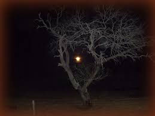

Swish swish!
The sharp edge of ifedayo’s matchete fell unto the thick bushes in rythmic perfection with each swing of his muscular arm, more thick brambles, leaves and branches piled up on the ground around him.
It was hard work anytime of the day but under the hot afternoon sun of the humid dry season, it was hard work anytime of the day but under the hot afternoon sun of the humid dry season, it